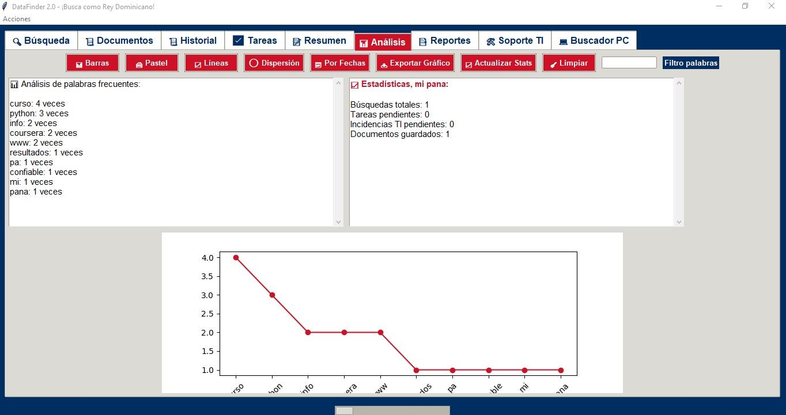
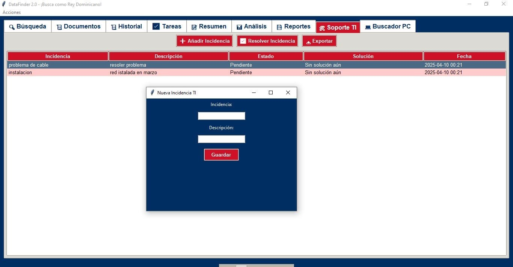

Anuncio de DataFinder 2.0
Mira DataFinder en Acción

Buscá en la web como rey

Analizá tus búsquedas

Soporte TI pa’ incidencias
Cómo Usar DataFinder 2.0 🇩🇴
¡Buscá como un pro con DataFinder, mi pana! 📜
- Descargá el programa y el
.dbdesde el botón de abajo. - Guardá el
.exeydatafinder_full_pc.dben la misma carpeta. - Escribà tu búsqueda (ej. "factura") y elegà dónde buscar (PC, web o base de datos).
- Analizá los resultados, usá el Soporte TI si tenés problemas, y limpiá con 🧹.
¡Mirá este video pa’ aprender rapidito! 🎥
Beneficios y Desventajas 🇩🇴
Beneficios
- Búsqueda rápida: Encuentra archivos en tu PC o en la web en segundos.
- Análisis poderoso: Gráficos y estadÃsticas pa’ entender tus búsquedas.
- Soporte TI: Reportá incidencias y organizá tu trabajo fácil.
- Flow dominicano: Interfaz con un toque cultural que te hace sentir en casa.
- Gratis: Descargalo sin pagar un peso, mi pana.
Desventajas
- Dependencia del .db: Sin
datafinder_full_pc.db, el programa no funciona. - Solo pa’ Windows: No corre en móviles ni otros sistemas.
- Interfaz clásica: El diseño es funcional, pero no muy moderno.
- Requiere conexión pa’ web: Las búsquedas online necesitan internet.
Descargá Ya
¡Bajá DataFinder 2.0 gratis desde Google Drive, mi pana! Incluye el .exe y datafinder_full_pc.db.